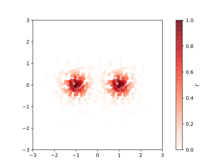
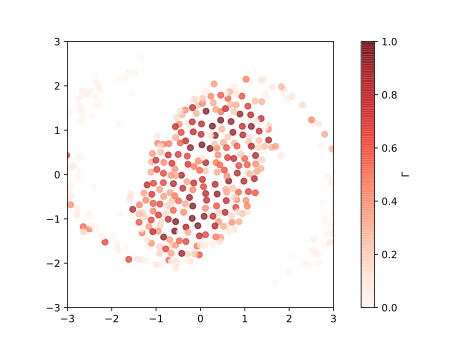

Getting Started
This getting started guide will introduce the main components of VortexModel.jl. The code examples here should be directly copy-paste-able into the Julia REPL (even with the julia> prompt and sample results).
Creating Vortex Elements
We start by importing the library and creating a single point vortex with unit circulation located at (1,1):
julia> using VortexModel
julia> p = Vortex.Point( 1.0 + 1.0im, 1.0 )
Point Vortex: z = 1.0 + 1.0im, Γ = 1.0By convention, the arguments for vortex type constructors are position(s) and circulation(s), followed by any type specific parameters. For example, a vortex blob at the same location as p with a blob radius of 0.1 is created with
julia> Vortex.Blob(1.0 + 1.0im, 1.0, 0.1)
Vortex Blob: z = 1.0 + 1.0im, Γ = 1.0, δ = 0.1We can use Julia's vectorized dot syntax to construct whole arrays of vortex elements. For example, here we create five point vortices and five vortex blobs:
julia> N = 5;
julia> zs = Complex.(randn(N), randn(N));
julia> points = Vortex.Point.(zs + 1.5, rand(N))
5-element Array{VortexModel.Vortex.Points.Point,1}:
Point Vortex: z = 1.797 + 0.311im, Γ = 0.425
Point Vortex: z = 1.882 + 2.295im, Γ = 0.773
Point Vortex: z = 0.902 - 2.267im, Γ = 0.281
Point Vortex: z = 1.49 + 0.53im, Γ = 0.209
Point Vortex: z = 0.661 + 0.431im, Γ = 0.251
julia> blobs = Vortex.Blob.(zs - 1.5, rand(N), 0.1)
5-element Array{VortexModel.Vortex.Blobs.Blob,1}:
Vortex Blob: z = -1.203 + 0.311im, Γ = 0.02, δ = 0.1
Vortex Blob: z = -1.118 + 2.295im, Γ = 0.288, δ = 0.1
Vortex Blob: z = -2.098 - 2.267im, Γ = 0.86, δ = 0.1
Vortex Blob: z = -1.51 + 0.53im, Γ = 0.077, δ = 0.1
Vortex Blob: z = -2.339 + 0.431im, Γ = 0.64, δ = 0.1We can mix different vortex types together by grouping them in tuples. For example, a collection of vortex elements consisting of the point vortices and vortex blobs created earlier can be grouped together with:
julia> sys = (points, blobs);The Unicode characters used in the examples can be entered in the Julia REPL (and most text editors with the appropriate plugins) via tab completion.. For example:
Γ:
\Gamma<TAB>Δ:
\Delta<TAB>ẋ:
x\dot<TAB>🌀:
\:cyclone:<TAB>
We can access properties of any vortex element by directly accessing its fields, for example:
julia> p.Γ
1.0However, it is better practice to use accessor methods, such as:
julia> Vortex.circulation(p)
1.0since not all vortex element types store their circulation in a Γ field but all types are required to implement a Vortex.circulation method (also see Vortex.impulse and Vortex.position). These accessor methods, combined with the dot syntax, also make it easier to work with properties of arrays and tuples of vortex elements.
julia> Vortex.circulation(points)
1.939982714228534
julia> Vortex.circulation(blobs)
1.8849356499471654
julia> Vortex.circulation(sys)
3.8249183641756996
julia> Vortex.circulation.(blobs)
5-element Array{Float64,1}:
0.0203749
0.287702
0.859512
0.0769509
0.640396
julia> Vortex.position.(blobs)
5-element Array{Complex{Float64},1}:
-1.20271+0.311111im
-1.1176+2.29509im
-2.09763-2.26709im
-1.51045+0.529966im
-2.33903+0.431422imComputing Vortex Velocities
Now that we can create vortex elements, we want to add in some dynamics. The key functions for this are the induce_velocity and induce_velocity! pair and self_induce_velocity!.
induce_velocity(target, source) computes the complex velocity that a vortex element(s) source induces on a target. The target can be
a complex position
julia> induce_velocity(0.0 + 0.0im , points) 0.05610938572529216 - 0.1319030126670981im julia> induce_velocity(0.0 + 0.0im , sys) 0.05066830110387291 - 0.04224547600656549ima vortex element
julia> induce_velocity(p, sys) -0.095439940976663 - 0.024542142467999073iman array/tuple of vortex elements
julia> induce_velocity(points, blobs) 5-element Array{Complex{Float64},1}: -0.00789749+0.0645051im -0.0278927+0.0538741im 0.0271037+0.0706032im -0.0111193+0.0675933im -0.0117893+0.078857im julia> induce_velocity(blobs, sys) 5-element Array{Complex{Float64},1}: 0.0126862+0.0352193im -0.111207-0.0472771im 0.0873796-0.0535197im -0.0375196+0.031068im -0.0279267-0.103821im
The in-place version, induce_velocity!(velocities, targets, source), computes the velocity and writes the results into a pre-allocated data structure. For example:
julia> vel_points = zeros(Complex128, length(points))
5-element Array{Complex{Float64},1}:
0.0+0.0im
0.0+0.0im
0.0+0.0im
0.0+0.0im
0.0+0.0im
julia> induce_velocity!(vel_points, points, blobs);
julia> vel_points
5-element Array{Complex{Float64},1}:
-0.00789749+0.0645051im
-0.0278927+0.0538741im
0.0271037+0.0706032im
-0.0111193+0.0675933im
-0.0117893+0.078857imTo make it easier to allocate velocities for more complex collections of vortex elements, the library provides the allocate_velocity function:
julia> vels = allocate_velocity(sys);
julia> typeof(vels)
Tuple{Array{Complex{Float64},1},Array{Complex{Float64},1}}The code above created a tuple containing two arrays of velocities, corresponding to the structure of sys. Similarly, there is also the reset_velocity!(velocities, sources) function, which resizes the entries in velocities to match the structure of sources if necessary, then sets all velocities to zero. We can compute the velocity that a source induces on the entire points/blobs system with:
julia> src = Vortex.Point(1.0, 1.0);
julia> induce_velocity!(vels, sys, src)
(Complex{Float64}[-0.067601+0.173242im, -0.0604154+0.023228im, 0.0700725-0.00301774im, -0.162041+0.149685im, -0.228068-0.179224im], Complex{Float64}[-0.0100056-0.0708409im, -0.0374576-0.0345609im, 0.0244871-0.033458im, -0.0128124-0.0606923im, -0.00605748-0.0468824im])If we want the velocity that the points/blobs system induces on itself, we can call
reset_velocity!(vels, sys)
induce_velocity!(vels[1], points, points)
induce_velocity!(vels[1], points, src)
induce_velocity!(vels[2], blobs, src)
induce_velocity!(vels[2], blobs, blobs)This becomes difficult to keep track of when sys gets larger or more complicated (e.g. nested collection of elements). Instead, we can use the self_induce_velocity! function, which takes care of applying all the pairwise interactions (recursively if need be):
julia> reset_velocity!(vels, sys);
julia> self_induce_velocity!(vels, sys);Time Marching
Now that we compute the velocities of a system of vortex elements, we can march the system forward in time to simulate its behavior. As an example, we will simulate of two clusters of vortex blobs merging.
N = 200
zs = Complex.(0.5randn(N), 0.5randn(N))
Γs = @. exp(-4abs2(zs))
cluster₁ = Vortex.Blob.(zs + 1, Γs, 0.01)
cluster₂ = Vortex.Blob.(zs - 1, Γs, 0.01)
sys = (cluster₁, cluster₂)
vels = allocate_velocity(sys)Functions for plotting vortex elements are still waiting for a couple more issues to be fixed on Plots.jl. For now, we can use PyPlot directly as follows:
using PyPlot
for cluster in sys
scatter(real.(Vortex.position.(cluster)),
imag.(Vortex.position.(cluster)),
c = Vortex.circulation.(cluster),
vmin = 0, vmax = 1, alpha = 0.7,
cmap = PyPlot.get_cmap("Reds"))
end
colorbar()
axis(:scaled)
axis([-3,3,-3,3])
Given an array or tuple of vortex elements and their velocities, we can compute their positions after some time interval with the advect!(x₊, x, ẋ, Δt) function, where
x₊is where the new states are storedxis the current stateΔtis the time intervalẋis the velocity.
In our case, we will let x₊ and x both be set to sys:
Δt = 0.01
for t in 0:Δt:1.0
reset_velocity!(vels, sys)
self_induce_velocity!(vels, sys)
advect!(sys, sys, vels, Δt)
end